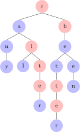
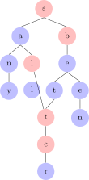
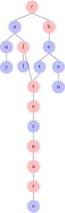

During the discussion of prefix trees, you might have wondered why we do not merge identical subtrees to reduce storage cost even more. For example, the first prefix tree could be represented more parsimoniously as the second one.


Relaxing prefix trees in this way is tantamount to removing the condition that every node has an indegree of at most one. Doing so generalizes prefix trees to prefix DAGs, where DAG is short for directed acyclic graph.
A graph \(G \mathrel{\mathop:}=\left \langle V,E \right \rangle\) is a directed acyclic graph (DAG) iff
For prefix trees, DAGs are actually not the best match. Suppose we want to add the word alternate to the prefix DAG above. Then we would have to add nate below alter.

But as you can see, this would also make betternate a word, which it clearly is not and likely will never be. In order to avoid this, we would have to add a separate branch for ternate below al. But then the DAG becomes non-deterministic: two distinct nodes in the graph encode alt. Non-determinism is poison for efficient search, endangering one of the most appealing aspects of prefix trees. Prefix trees therefore are best limited to trees rather than the more general class of DAGs.
But that isn’t to say that there are no applications for DAGs. Quite to the contrary! DAGs are everywhere in computer science. A spreadsheet, for example, can be regarded as a DAG such that each cell is a node, the top left is the root, adjacent cells are connected by edges, and if a cell \(x\) has the same value as a cell \(y\), all edges to \(x\) are instead edges to \(y\). And DAGs can be found in linguistics, too.
Since the mid 90s, various syntacticians have been toying with the idea that sentence structures aren’t trees but rather multi-dominance trees. For example, the sentence This boy, John loves would receive the structure below (this structure is simplified quite a bit and does not do justice to the finely articulated syntactic hierarchy that multidominance proponents tend to work with).
An even more radical proposal are grafts. Whereas multidominance trees still must have a single root, this restriction is lifted for grafts. They thus often look like two normal trees have been joined at the hip. This is useful to account for syntactic amalgams, as in the sentence John went to I believe it was Chicago.
From a formal perspective, grafts are simply DAGs, whereas multidominance trees are DAGs with a unique root.
DAGs frequently show up in the parsing literature. Parsing refers to the task of assigning a string a tree structure, and a device that performs this task is called a parser. In particular with natural languages, it is very common for a single string to be compatible with multiple tree structures. The sentence I watched a movie with Arnold, for example, is ambiguous: either me and my friend Arnold watched a movie, or I watched a movie featuring the well-known actor Arnold Schwarzenegger. The contrast in meaning corresponds to a structural difference in what the phrase with Arnold is attached to.
(Side note: this is a nice illustration of how much world knowledge matters for language — the analogous sentence I watched a movie with Peter cannot mean I watched a movie featuring the actor Peter Cushing, because only Arnold has the privilege of being an actor that is uniquely identified by his first name.)
When storing multiple parses, it is highly inefficient to store them as separate trees. Since the trees will usually look very similar, it is more efficient to represent them all as part of a single graph so that common parts can be shared between trees. The result is what is called a parse forest.
Even though parse forests look much more complicated than grafts, both are instances of DAGs.
Represent the character-based prefix tree from the exercise in the previous unit as a DAG instead. Can you think of a word that cannot easily be added to this prefix DAG?
Represent the morpheme-based prefix tree from the exercise in the previous unit as a DAG instead. Can you think of a word that cannot easily be added to this prefix DAG?
Below are two syntactic analyses for John and Bill or Mary left the party in a hurry. Draw the corresponding parse forest.